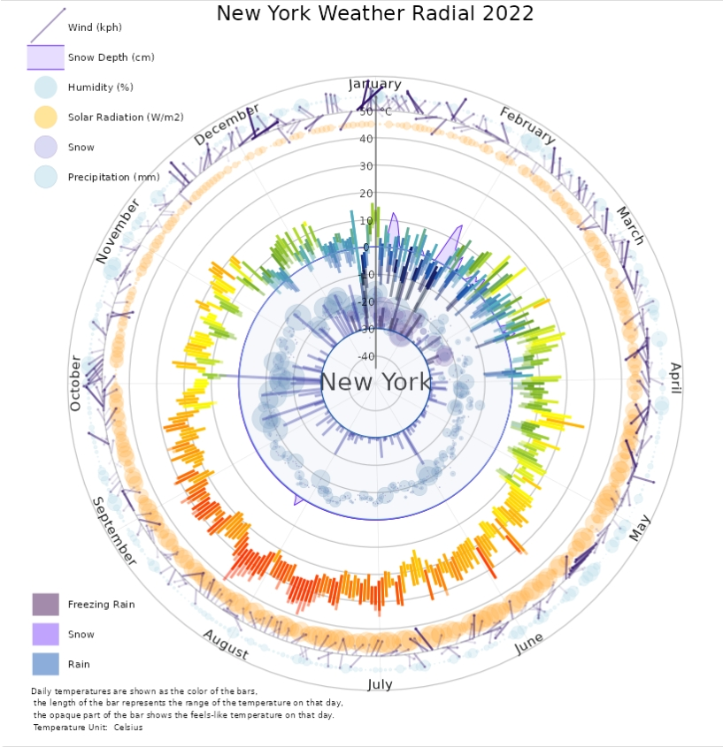
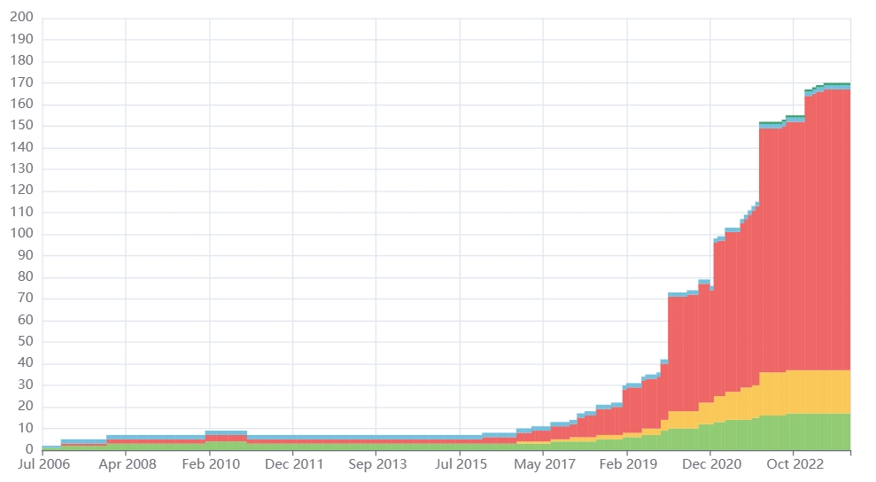
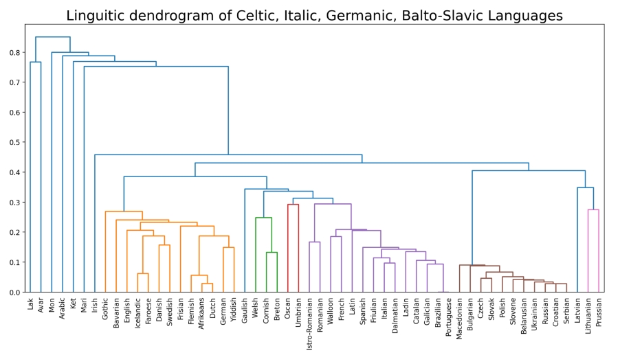
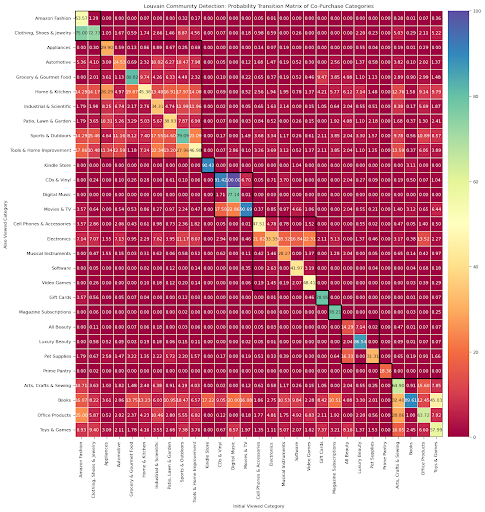

揭开亚马逊电子商务的面纱：消费者行为和市场趋势的网络分析
- -在 Networkx 中使用特征向量中心性，接近中心性，中介中心性等来识别产品类型网络中最重要的 10 个类型。
- -通过度分布的对数-对数图验证了产品类型网络的无标度性，并利用分位图确定产品价格的对数正态分布
- -利用谱聚类、Louvain 社群检测，贪婪模块性最大化等方法检测共同购买网络中的 10 个产品类型聚集簇
- -利用节点在网络中的诸多统计量作为特征实施逻辑回归，以预测顾客是否会购买浏览过的产品，并取得了 0.78 的F1 分数


图形结构支撑集上的近似弗兰克-沃尔夫算法
- -审读了一篇关于使用近似 Frank-Wolfe 算法解决图结构凸优化问题的论文。
- -重新实现并分析了原算法，并提出了扩展算法，包括回溯寻线法，有效减少了迭代次数
- -提出了一种新的 DMO 方法（Top-g+最优访问）来得到近似的 IPO，该方法在收敛率上有一定的提高，但运行时间明显增加/li>
- -比较了通过 DMO 的 FW 方法、随机 PGD 方法和最佳 PGD 方法的目标函数值，得到了良好的结果

探索一个世纪以来电影类型、收入和产业动态的演变： 利用数据科学和可视化进行综合分析。
- -利用 Python 中的 MapReduce 和 SparkSQL 分析电影元数据，从 45,000 多条记录中提取类型、语言、预算、收入和上映日期，时间跨度长达 100 年。
- -在 Jupyter Notebook 中使用 Pandas 和 Matplotlib 对类型趋势进行可视化，发现戏剧和爱情类型的受欢迎程度有所下降，而动作和冒险类型的受欢迎程度有所上升。
- -对 Spark 和 SparkSQL 进行分析，以确定调整后的电影收入和利润，并利用消费物价指数数据将通货膨胀因素考虑在内，突出经济条件变化的影响。
- -经通货膨胀调整后，《乱世佳人》被确定为历史上最赚钱的电影，强调了某些电影的历史意义，尽管多年来娱乐选择日益多样化。


宜居性洞察： 使用 Python、Pandas 和 Tableau 对美国城市进行多数据集分析。
- -分析了五个数据集，包括 Zillow 房屋价值指数（反映住房成本）、全国交通事故数据集（反映交通事故）、环保局步行指数（反映步行便利性）、气候比较数据（反映天气）和国家健康统计中心/USALEEP（反映预期寿命）。
- -使用 Python 和 Pandas 处理和清理数据集，确保城市一级的一致性；在 Tableau 中连接数据集，创建综合仪表板。
- -发现了影响宜居性因素之间的相关性，如步行城市的住房成本较高，以及影响预期寿命的与天气相关的潜在挑战。
- -落实用户反馈意见，增强可视化效果，解决图例、组织、描述和单位方面的问题，力求提供更加友好的用户体验。